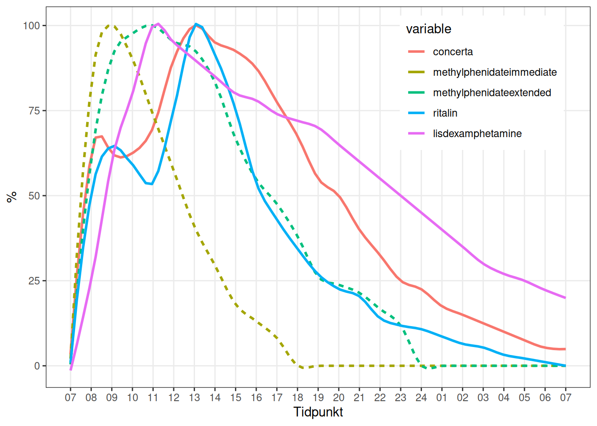

Kapitel 9 ADHD
Kärnsymtomen vid diagnostik enligt DSM-5 är hållande problem med ouppmärksamhet och/eller hyperaktivitet och impulsivitet. Kan indelas i huvudakligen ouppmärksam eller huvudsakligen hyperaktiv typ.
Med impulsivitet avses förhastade handlingar som görs utan eftertanke och innebär hög risk för skada för individen (tex korsa gatan utan att se sig för). Det kan avspegla en önskan om omdelebar belöning eller oförmåga att skjuta upp belöning. Det kan manifestera sig som socialt inkräktande beteende och att göra viktiga beslut utan att överväga långtidskonsekvenserna.
Symtomen skall vara funktionsnedsättande och flera symtom skall ha förelegat före 12 års ålder och i mer än en kontext (hemma, skola, arbete). De skall ej förklaras bättre av annan psykisk sjukdom.
Associerade symtom kan vara låg tolerans för frustration, irritabilitet, humörsvängningar. Kognitiva svårigheter (uppmärksamhet, minne, exekutiva funktioner) kan föreligga.
Prevalensen är ca 5% av barn och 2.5% av vuxna. Hos vissa barn förvärras tillståndet med antisociala beteenden. Motorisk hyperaktivitet minskar vanligen i ungdomen och vuxen ålder.
Gradering av svårighet:
- Mild: Inga eller få symtom uöver de som krävs för diagnos.
- Svår: Många symtom utöver de som krävs för diagnos, eller flera symtom som är särskilt uttalade, eller påtaglig funktionsnedsättning.
- Måttlig: mellan mild och svår.
Ouppmärksamhet. Fem av, skall föreligga ofta:
- Svårt att hålla uppmärksamhet på detaljer, gör slarvfel.
- Svårighet att bibehålla uppärksamhet (tex fokus under lektion, konversation eller läsning).
- Verkar inte lyssna under samtal.
- Följer ej instruktioner och klarar ej att slutföra skolarbete, arbetsuppgifter etc.
- Svårt att oranisera uppgifter, missar deadlines, desorganiserat arbete.
- Undviker eller ogillar uppgifter som kräver ihållande ansträngning.
- Tappar bort saker (skolmaterial, plånbok, nycklar etc).
- Distraheras av yttre stimuli.
- Glömsk i dagliga aktiviteter (missar möten, betala räkninger etc).
Hyperaktivitet. Fem av nedanstående, skall föreligga ofta:
- Plockar med händerna eller vrider sig på stolen.
- Lämnar situationer där man förväntas förbli sittande.
- Springer runt eller klättrar i olämpliga situationer (hus ungdomar och vuxna kan det vara begränsat till en känsla av rastlöshet).
- Är “på gång”, svårt att vara stilla längre tid.
- Talar överdrivet mycket.
- Häver ur sig svaret innan en fråga ställts färdigt (kan inte vänta på sin tur i samtal).
- Svårigheter att vänta på sin tur (tex vid kö).
- Avbryter eller inkräktar på andra (tex använder andras saker utan att fråga om lov).
9.1 Differentialdiagnostik
Ökad motorisk aktivitet kan särskiljas från stereotypa rörelser vid autism genom att det senare vanligen är repetetivt, emedan rastlösheten vid ADHD är generaliserad och ej stereotyp.
ADHD-liknande symtom kan förekomma vid intellektell dysfunktion då personen sätts i en akademisk miljö som ej är i nivå med intellektuell förmåga. Symtomen förekommer då vanligen ej i tex hemmamiljö.
Ångestsyndrom kan ge ouppmärksamhet. Vid ADHD är symtomen ej kopplade till oro och ältande.
Vid depressiva episoder kan oförmåga att fokusera uppträda, men föreligger endast under själva episoden.
Vid bipolärt syndrom kan ökad aktivitet, nedsatt koncentration och impulsivitet förekomma, men uppträder då episodiskt och tillsammans med andra bipolära symtom (förhöjd grundstämning, grandiositet etc). Bipolärt syndrom är ovanligt före tonåren.
Substansbrukssyndrom. Tydliga symtom som vid ADHD före substansbruket började bör föreligga för att ADHD-diagnos skall ställas.
9.2 Samsjuklighet
Trotssyndrom och uppförandestöring vanligt. Substansbrukssynbdrom, ångestsyndrom och depression är något vanligare vid ADHD än i allmänna befolkningen, men uppträder endast hos en minoritet. Annan samsjuklighet som förekommer är tex antosocial personlighetsstörning, OCD, autism.
9.3 Bedömning inför mottagande i ADHD-team (remisskrav)
Gäller ADHD eller annan neuropsykiatrisk problematik.
- Bedömning med fokus på aktuella symtom och funktionsnivå i vuxen ålder samt i barndomen
- Screening förslagsvis med hjälp av (ASRS v 1.1, RAADS-14/AQ o eventuellt NF 5-15 förkortad version).
- Remisser från andra landstings specialistpsykiatri/kriminalvård ska inkludera senaste läkaranteckning, aktuell läkemedelslista samt ställningstagande till eventuellt missbruk/riskbruk.
- I de fall där det finns en tidigare fastställd neuropsykiatrisk diagnos ska den utredning som ligger till grund för diagnosen bifogas.
- Remisser internt, från andra vårdgrannar eller egenanmälningar hanteras på sedvanligt sätt (obs viktigt att den ev NP-utredningen bifogas).
För att neuropsykiatrisk utredning ska bli aktuell ska patienten uppvisa symtom på autismspektrumtillstånd, ADHD eller intellektuell funktionsnedsättning eller på annat sätt inge misstankar om utvecklingsrelaterad funktionsnedsättning med debut i barndomen, samt ha signifikant lidande eller funktionsnedsättning inom minst två viktiga livsområden. Patienten själv ska också vilja genomgå utredning.
9.4 Screening inom psykiatrin
Se Vårdprogram för neuropsykiatrisk utredning och behandling
- Alltid i informerat samförstånd med patienten.
- Patienten får fylla i screeninginstrument om de inte redan är besvarade (AUDIT, DUDIT, ASRS, WURS, AQ/RAADS-14). Detta kan med fördel fyllas i av patienten i hemmet.
- Ansvarig psykolog inhämtar kontaktuppgifter till anhörig som kan delta i utredningen.
- Anhöriga till patienten ombeds fylla i formulär NF5-15 i syfte att säkerställa symtom i barndomen samt involvera anhöriga inför en eventuell fortsatt utredning.
- Medarbetare i utredningsteamet (vanligtvis psykolog) genomför en utförlig journalgranskning och genomgång av tidigare genomförda utredningar. Journalrekvisition samt patientens medgivande för det görs vid behov.
- Utifrån detta tar psykologen tillsammans med patienten ställning till om det finns anledning att gå vidare med ett bedömningssamtal. Patienten får återkoppling på screeningsinstrument av ansvarig psykolog.
- Drogscreening (amfetamin/ecstasy, cannabis, bensodiazepiner, opiater, metadon, oxikodon)och alkoholprov (CDT och peth) skall alltid genomföras innan fortsatt bedömning.
9.4.1 Aktuella dokument/verktyg för screening som kan användas under hela utredningsförloppet
AUDIT DUDIT ASRS NF5-15 förkortad version AQ/RAADS-14
Vid frågeställning autism IDA Ev. WAIS-bedömning RAADS – fullständig version NF5-15 RCFT
Vid frågeställning ADHD/ADD WAIS-bedömning WRASS WURS CPT 3 DIVA WRASS-anhörigversion NF5-15
9.5 Bedömning inom psykiatrin
Bedömningssamtalet bör följa rubrikerna i bedömningsmallen. Utgår från screeningresultat. Utförs i första hand av ansvarig psykiater och i andra hand av ansvarig psykolog. Vid bedömning är det viktigt att säkerställa drogfrihet (även pågående medicinering som kan påverka patientens kognition bör utvärderas) inför en eventuell efterföljande utredning då det kan tänkas inverka på utredningsresultatet. I dessa fall kan anhörigintervjuer vara lämplig utgångspunkt tills dess att drogfrihet säkerställs.
Var observant på vilket tillstånd patienten befinner sig i och vilka andra faktorer som kan antas inverka på bedömningen, t.ex. pågående livskris, depression, pågående beroendeproblematik, psykotiska symtom, PTSD, GAD etc. Avvikande/höga alkoholvärden kräver en noggrann alkoholanamnes och läkarbedömning.
Arbetsterapeutisk bedömning genomförs vid behov
När tillräcklig information inhämtats bör utredningsteamet sammanfatta utredningen och ta ställning till följande: - art och grad av symtom och funktionsnedsättning inom olika livsområden - om dessa motsvarar diagnoskriterier (för ett eller flera tillstånd) - eventuell tilläggsproblematik/psykiatrisk samsjuklighet - eventuellt behov av ytterligare kompletterande undersökningar - preliminär åtgärdsplan som sedan behöver diskuteras med patienten och eventuellt med närstående
9.5.1 Bedömningssamtalsmall
Genomförs i första hand av psykiater och i andra hand av psykolog.
Syfte och patientens egen problembeskrivning
Aktuell social situation inklusive arbete eller studier
Psykiatrisk problematik- aktuell och tidigare
Ärftlighet
Syfte och patientens egen problembeskrivning
Graviditet/förlossning/tidig utveckling
Somatisk sjukhistoria från barndom till vuxen ålder inklusive olycksfall/infektioner
Läkemedel tidigare/aktuella
Droger, alkohol, övrigt missbruk
Utsatthet för våld
Psykiatrisk och somatisk differentialdiagnostik
Kriminalitet
Symtom och funktionsnedsättning i barndomen
Symtom och funktionsnedsättning i vuxen ålder
Psykisk status inklusive suicidrisk och våldsrisk vid behov
Sammanfattande bedömning
Fortsatt åtgärd
Somatisk anamnes med fokus på ökad kardiell risk (se avsnittet nedan)
Somatiskt status inklusive nervstatus, auskultation av hjärta och lungor
Blodprover: ASAT, ALAT, Hb, LPK, TPK, Na, K, krea, CDT och peth, TSH, T4, p-glukos och HbA1c.
Var observant på vilket tillstånd patienten befinner sig i och vilka andra faktorer som kan antas inverka på bedömningen, t.ex. pågående livskris, depression, pågående beroendeproblematik, psykotiska symtom, PTSD, GAD etc.
9.6 Bedömning inför läkemedelsbehandling
Innan behandling med läkemedel för ADHD:
- Gå igenom diagnoskriterier och se att de fortfarande uppfylls.
- Psykiatrisk samsjuklighet
- Ätstörning eller anorexi, aktuell vikt
- Tics eller andra ofrivilliga rörelser
- Tidigare psykosepisoder, ångest, mani eller hypomani, depression och suicidalitet
- Nuvarande arbete/skola
- Riskbedömning avseende substansbruk och “drug diversion”, kriminalitet
- Omvårdnadsbehov
- Medicinsk anamnes, kontraindikationer
- Förekomst av epilepsi och glaukom
- Kardiovaskulär eller cerebrovaskulär sjuklighet, hereditet för plötslig död eller ventrikulär arytmi
- Nuvarande medicinering
- Längd vikt.
- Puls, blodtryck
- Auskultation av hjärta och lungor
- Samtidig behandling med andra läkemedel.
- Kvinnor i fertil ålder ska ha säkert preventivmedel.
- Symtomskattning
9.6.1 Ökad kardiell risk vid…
- Medfött hjärtfel eller tidigare hjärtkirurgi
- Plötslig hjärtdöd hos förstagradssläkting < 40 åå
- Andfåddhet vid ansträngning
- Svimning under ansträngning eller vid plötsliga ljud eller rädsla
- Hjärtklappning som är regelbunden, startar och stoppar plötsligt. Enstaka extraslag behöver ej utredas.
- Kardiell bröstsmärta
- Tecken till hjärtsvikt
- Biljud vid auskultation av hjärtat
- Hypertoni (?)
- Läkemedelsbehandling som ökar arytmirisk
Om något av ovanstående föreligger, tag EKG och överväg kardiologkonsult.
9.7 Uppföljning
- Baslinje: Blodtryck, puls, biverkningsformulär och ASRS
- Två veckor efter insättning eller dosökning: Blodtryck, puls, biverkningsformulär och ASRS.
- Återbesök hos läkare efter fyra veckor till sex veckor efter första besöket.
- Sexmånaderskontroll efter optimerad dostitering: provtagning (ASAT, ALAT, Na, K, krea, CDT och peth och urindrogscreening ), kontroll av puls och blodtryck hos sjuksköterska. Kiralt amfetamin-urinprov om patienten står på Elvanse och/eller Attentin/Metamina (lisdexamfetamin/dexamfetamin). Skattning av behandlingseffekt (ASRS) och eventuella biverkningar (se biverkningsformulär) får också göras hos sjuksköterska i samband med sexmånaderskontrollen.
- Vid stabil och okomplicerad behandling, kontroll därefter, två gånger per år hos sjuksköterska med kontroll av blodtryck, puls, vikt samt skattning av behandlingseffekt (ASRS) och eventuella biverkningar (se biverkningsformulär). Det är viktigt med en individuell bedömning.
- Årskontrollprover/undersökningar: ASAT, ALAT, Na, K, krea CDT och peth och urindrogscreening, puls, blodtryck och EKG. Kiralt amfetaminurinprov vid behov.
- Årsbesök hos läkare en gång/år. Det är viktigt med en individuell bedömning.
- Fortlöpande bedömning av behovet av fortsatt medicinering hos specialistläkare i psykiatri.
9.8 Särskild observans
Missbruk: Vid samtidig ADHD och missbruk eller beroendesyndrom bör behandling av båda tillstånden ske inom beroendevården. Missbruket bör vara under kontroll innan läkemedelsbehandling av ADHD påbörjas. Vid skadligt bruk av alkohol och narkotika bör risken vägas med nyttan av medicinering. Regelbunden medicinhämtning veckovis eller tätare kan övervägas för riskpatienter.
Hjärtsjukdom: Vid anamnes för kardiovaskulär eller cerebrovaskulär sjuklighet, alternativt hereditet för plötslig död eller ventrikulär arytmi, ta EKG och rådgör med kardiolog inför eventuell läkemedelsbehandling. Centralstimulantia och atomoxetin tenderar i kliniska prövningar att öka hjärtfrekvensen och att ge en marginell blodtryckshöjning på gruppnivå. Den kliniska relevansen av dessa fynd är oklar, men det är ändå viktigt att följa puls och blodtryck regelbundet då enstaka patienter kan reagera med kliniskt betydelsefulla förhöjningar. ACE-hämmare/AT2-blockerare/ betablockerare/calciumblockerarekan då behövas i tillägg och sådana frågor bör diskuteras med kardiolog och patienten kan med fördel remitteras till primärvården för bedömning och ställningstagande till behandling av det eventuella höga blodtrycket.
Psykossjukdom: Obehandlad psykossjukdom innebär en absolut kontraindikation för behandling med centralstimulantia. Tidigare, övergående missbruksinducerade psykoser är inte kontraindikation men bör föranleda försiktighet.
Depression: Centralstimulantia och atomoxetin ska ges med försiktighet till patienter med svår depression, svår ångest eller aktuella suicidtankar, eftersom risk för försämring av dessa tillstånd finns. Samexisterande tillstånd bör vara optimalt stabiliserade innan ADHD-läkemedel insättes.
Bipolär sjukdom: För behandling med centralstimulantia eller atomoxetin vid bipolär sjukdom krävs att patienten först har en väl inställd behandling med stämningsstabiliserande läkemedel. Även då krävs försiktighet och tätare kontroller av ADHD-medicinering eftersom dessa preparat kan försämra den bipolära sjukdomen.
Epilepsi: Vid behandling av vuxna med epilepsi, hjärnskada eller CNS-sjukdom bör försiktighet iakttas vid behandling med centralstimulantia och atomoxetin. Samråd gärna med neurolog.
Tics: Centralstimulerande läkemedel kan öka eller utlösa motoriska och verbala tics och dyskinesier. I vissa fall bör detta motivera en dosreduktion eller ett avbrytande av behandling. Ibland kan istället minskade tics ses vid behandling med centralstimulantia.
9.9 Läkemedel för ADHD
Metylfenidat är förstahandsval för barn, ungdomar och vuxna enligt lokala vårdprogrammet. Rekommendationsgrad A enligt läkemedelsverket 2016.
Lisdexamfetamin (Elvanse) är förstahandsval för vuxna. Vid otillräcklig effekt kan metylfenidat (Concerta) provas. För vuxna kan upp till 108 mg Concerta behövas [60]. När båda dessa provats i sex veckor i maxdos och om effekt uteblir kan atomoxetin provas istället. Dexamfetamin kan användas om den längre durationen hos föstahandsvalen ej tolereras.
Omkring 70% svarar på behandling och förbättrar både symtom på ouppmärksamhet och hyperaktivitet [60]. Läkemedlen blockerar återupptag av noradrenalin och dopamin och amfetamin ökar frisättningen av dopamin. Metylfenidat ökar frisättningen av noradrenalin i delar av hjärnan [60].
Vanliga biverkningar är insomni, illamående, anorexi, minskad aptit, viktförlust, huvudvärk, irritabilitet, humörsvängningar, buksmärta, ökad puls, förhöjt blodtryck. Kan även ge tics. I ovanliga fall kramper, psykos, hepatotoxicitet. Många biverkningar minskar över tid. Vissa biverkningar, tex irritabilitet, som uppträder sent på dagen kan bero på rebound-fenomen och föranleda extra dos av CS på eftermiddagen. Samma gäller för insomni.
Atomoxtin (SNRI) kan ha en viss ångestlindrande effekt. Metaboliseras via CYP2D6 och kan därför vara svårt att kombinera med SSRI. Bupropion är kan användas som andrahandsval mot ADHD-symtom [60].
Atomoxetin (Strattera) kaps. 10, 18, 25, 40, 60 och 80 mg: är ett icke-narkotikaklassat läkemedel. Preparatet kan användas om metylfenidat inte har tillräcklig effekt och/eller när det inte är lämpligt att använda centralstimulerande medel, t.ex. vid svåra tics, allvarlig sömnstörning, behov av effekt över hela dygnet, okontrollerat missbruk/risk för missbruk eller annan felaktig användning av centralstimulantia. Atomoxetin har inte satts i samband med missbruk (Läkemedelsverket, 2009). Effekt uppnås efter ca 4-6 v. Atomoxetin kan kombineras med centralstimulantia och har visat god effekt vid insomningsproblem om det ges på kvällen. (Vårdprogrem BC stockholm).
The initial therapeutic effects of atomoxetine usually take 1 to 4 weeks to become apparent.[5][25][26] A further 2 to 4 weeks may be required for the full therapeutic effects to be seen.[27][25] Incrementally increasing response may occur up to 1 year or longer.[26][28] The maximum recommended total daily dose in children and adolescents over 70 kg and adults is 100 mg (Wikipedia)
Se NICE Guidelines för läkemedelsbehandling av ADHD.
Tabell 9.1 visar farmakokinetiska egenskaper hos olika läkemedel mot ADHD.
| Handelsnamn | Substans | Mix omedelbar/fördröjd | Topp (tim) | T 1/2 |
|---|---|---|---|---|
| Attentin | Dexamfetamin | 100/0 | 1.5 | 10.0 |
| Ritalin, Medikinet | Metylfenidat | 100/0 | 1.5 | 2.0 |
| Elvanse | Lisdexamfetamin | 4 | 11.0 | |
| Concerta | Metylfenidat | 20/80 | 1.5 + 7 | 3.5 |
| Medikinet | Metylfenidat | 50/50 | 1.5+3? | 3.2 |
| Ritalin | Metylfenidat | 50/50 | 1.5+5.5? | 3.0 |
| Equasym | Metylfenidat | 30/70 | 1.5+5 | 2.0 |
| Strattera | Atomoxetin | 4.0 | ||
| Strattera | Atomoxetin | 1.5 | 4.0 | |
| Intuniv | Guanfacin | 5 | 18.0 |
Tabell 9.2 visar dosering för olika läkemedel mot ADHD.
| Handelsnamn | Substans | Start | Titrering | Måldos | Maxdos |
|---|---|---|---|---|---|
| Attentin | Dexamfetamin | Barn 5 mg | (2.5-5 mg) | (50 mg) | |
| Ritalin, Medikinet | Metylfenidat | Barn 5 mg | (5 mg) | (100 mg) | |
| Elvanse | Lisdexamfetamin | (20-)30 | (10-)20 mg/vecka | 50-70 mg | 70 mg |
| Concerta | Metylfenidat | Barn 18 mg | (9-18 mg/v) | 54 mg | (80 mg) |
| Medikinet | Metylfenidat | 10 mg | (5-)10 mg/v | 30 mg | 80 mg eller 1 mg/kg |
| Ritalin | Metylfenidat | 20 mg | 20 mg/v | 80 mg | |
| Equasym | Metylfenidat | ||||
| Strattera | Atomoxetin | (40mg) | (20 mg/1-2v) | Minst av 100 mg el 1.4 mg/kg | |
| Strattera | Atomoxetin | ||||
| Modiodal | Modafinil | ||||
| Intuniv | Guanfacin |
Figuren nedan visar ungefärlig relativ koncentration av olika läkmedel mot ADHD.

9.10 Psykopedagogiska insatser
Syftar till att ge kunskap om vad diagnosen innebär och hur svårigheterna kan påverka den vardagliga situationen. Patient med ny ADHD-diagnos, kallas till två gruppinformationsträffar med sina närstående, där de får psykoedukation om sin diagnos och mottagningens behandlingsinsatser. De får sedan möjlighet att anmäla intresse till den behandlingsinsats som de önskar. Individuell bedömning och ställningstagande till åtgärd av dem som har svårt med gruppmöten.
9.11 Psykologisk behandling
Psykiatrin erbjuder psykoterapi för personer med ADHD-problematik i form av färdighetsträning i grupp. Terapin ger patienter kunskap om deras individuella svårigheter och funktionsnedsättning och ska ge patienter verktyg för att utveckla förmågor och färdigheter som bidrar till förändring i patientens vardag.
9.12 Arbetsterapeutiska behandlingsinsatser
Arbetsterapeuten arbetar med insatser tillsammans med patienten som förbättrar patientens förmåga och utförande i dagliga livets aktiviteter, inom hemliv, arbete/studier och fritid. De arbetsterapeutiska insatserna kan ges både individuellt och/eller i grupp (Ha koll). Hjälper patienter att skapa strategier och struktur i vardagen och med anpassning av miljön genom att skapa rutiner och regelbundna vanor, veckoplanering och scheman, tidsplanering, checklistor, rutiner och förutsättningar för ordning i hemmet. Förskriver kognitiva hjälpmedel och rekommenderar produkter från öppna marknaden till stöd för daglig struktur, minne, planering, tidsuppfattning och start/avslut av aktivitet. Instruktion, träning och uppföljning i att genomföra och bibehålla strategier och använda hjälpmedel. Se bilaga.
9.13 Kuratorsbehandling
Kuratorn vägleder patienten i frågor som rör ekonomi, bostad, studier, arbete/sysselsättning och familj. Kurator kan även vara en länk och samordna insatser i kontakt med habilitering, försäkringskassa, arbetsförmedling och kommunens stödresurser så som socialpsykiatri, socialtjänst etc. De kan vid behov initiera och delta vid SIP-möten. Utöver detta kan kurator erbjuda ett begränsat antal samtal som krisstöd och/eller familje- /anhörigsamtal.